<title>Stack, Spread and Divide</title>
<meta name="claude:viewport-fit-sides" content="cover" />
<link rel="preconnect" href="https://fonts.googleapis.com" />
<link rel="preconnect" href="https://fonts.gstatic.com" crossorigin />
<link
  rel="stylesheet"
  href="https://fonts.googleapis.com/css2?family=Archivo:wght@500;600;700&family=Source+Sans+3:ital,wght@0,400;0,600;1,400&family=JetBrains+Mono:wght@400;600&display=swap"
/>
<style>
  :root {
    --paper: #f4f6f9;
    --surface: #ffffff;
    --sunk: #eaeef3;
    --ink: #18202b;
    --muted: #586374;
    --rule: #d6dce4;
    --accent: #2763a8;
    --accent-soft: #e3ecf7;
    --img-bg: #ffffff;
    --img-border: #cfd6df;
    --band-1: #8fb3db;
    --band-2: #b9cde6;
    --band-3: #dbe6f3;
    --tok-keyword: #8a3ab9;
    --tok-string: #1f7a4d;
    --tok-number: #b35c00;
    --tok-comment: #7a8594;
    --tok-title: #2763a8;
    --tok-attr: #9b2c54;
    --tok-literal: #b35c00;
    --font-body:
      "Source Sans 3", "Segoe UI", system-ui, -apple-system, sans-serif;
    --font-head: "Archivo", "Helvetica Neue", Arial, sans-serif;
    --font-mono:
      "JetBrains Mono", ui-monospace, SFMono-Regular, Menlo, Consolas, monospace;
    color-scheme: light;
  }
  @media (prefers-color-scheme: dark) {
    :root:not([data-theme="light"]) {
      --paper: #12161c;
      --surface: #1a2029;
      --sunk: #151a21;
      --ink: #e2e7ee;
      --muted: #9aa5b4;
      --rule: #2c3540;
      --accent: #7eb0ea;
      --accent-soft: #1d2b3d;
      --img-bg: #ffffff;
      --img-border: #3a4552;
      --band-1: #3c6a9e;
      --band-2: #2f5480;
      --band-3: #243f60;
      --tok-keyword: #c99af0;
      --tok-string: #8fd1a8;
      --tok-number: #f0b072;
      --tok-comment: #7d8898;
      --tok-title: #8dbcf0;
      --tok-attr: #f09ab8;
      --tok-literal: #f0b072;
      color-scheme: dark;
    }
  }
  :root[data-theme="dark"] {
    --paper: #12161c;
    --surface: #1a2029;
    --sunk: #151a21;
    --ink: #e2e7ee;
    --muted: #9aa5b4;
    --rule: #2c3540;
    --accent: #7eb0ea;
    --accent-soft: #1d2b3d;
    --img-bg: #ffffff;
    --img-border: #3a4552;
    --band-1: #3c6a9e;
    --band-2: #2f5480;
    --band-3: #243f60;
    --tok-keyword: #c99af0;
    --tok-string: #8fd1a8;
    --tok-number: #f0b072;
    --tok-comment: #7d8898;
    --tok-title: #8dbcf0;
    --tok-attr: #f09ab8;
    --tok-literal: #f0b072;
    color-scheme: dark;
  }

  * {
    box-sizing: border-box;
  }
  html {
    scroll-padding-top: 64px;
  }
  body {
    margin: 0;
    background: var(--paper);
    color: var(--ink);
    font-family: var(--font-body);
    font-size: 17px;
    line-height: 1.55;
    -webkit-text-size-adjust: 100%;
  }
  @media (prefers-reduced-motion: no-preference) {
    html {
      scroll-behavior: smooth;
    }
  }

  .wrap {
    max-width: 900px;
    margin: 0 auto;
    padding-left: max(16px, env(safe-area-inset-left, 0px));
    padding-right: max(16px, env(safe-area-inset-right, 0px));
    padding-block: 28px 64px;
  }

  h1,
  h2,
  h3 {
    font-family: var(--font-head);
    line-height: 1.2;
    letter-spacing: -0.01em;
  }
  h1 {
    font-size: clamp(30px, 6vw, 42px);
    font-weight: 700;
    margin: 8px 0 6px;
  }
  h2 {
    font-size: 24px;
    font-weight: 700;
    margin: 52px 0 14px;
    padding-top: 14px;
    border-top: 1px solid var(--rule);
  }
  h3 {
    font-size: 18px;
    font-weight: 600;
    margin: 30px 0 10px;
  }
  p {
    margin: 0 0 14px;
  }
  a {
    color: var(--accent);
    text-underline-offset: 2px;
  }
  ul,
  ol {
    padding-left: 1.3em;
    margin: 0 0 14px;
  }
  li {
    margin: 3px 0;
  }
  strong {
    font-weight: 600;
  }
  .status {
    color: var(--muted);
    font-size: 15px;
  }

  code {
    font-family: var(--font-mono);
    font-size: 0.84em;
    background: var(--sunk);
    border: 1px solid var(--rule);
    border-radius: 4px;
    padding: 0 4px;
    overflow-wrap: anywhere;
  }
  pre {
    margin: 0 0 14px;
    background: var(--sunk);
    border: 1px solid var(--rule);
    border-radius: 6px;
    overflow-x: auto;
    max-width: 100%;
  }
  pre code {
    display: block;
    background: none;
    border: 0;
    padding: 12px 14px;
    font-size: 13.5px;
    line-height: 1.5;
    white-space: pre;
    overflow-wrap: normal;
  }
  .code-label {
    font-family: var(--font-head);
    font-size: 12px;
    font-weight: 600;
    text-transform: uppercase;
    letter-spacing: 0.06em;
    color: var(--muted);
    margin: 12px 0 5px;
  }
  .hljs-keyword,
  .hljs-built_in {
    color: var(--tok-keyword);
  }
  .hljs-string {
    color: var(--tok-string);
  }
  .hljs-number,
  .hljs-literal {
    color: var(--tok-number);
  }
  .hljs-comment {
    color: var(--tok-comment);
    font-style: italic;
  }
  .hljs-title,
  .hljs-title.function_ {
    color: var(--tok-title);
  }
  .hljs-attr,
  .hljs-property {
    color: var(--tok-attr);
  }
  .hljs-params,
  .hljs-variable {
    color: var(--ink);
  }

  /* sticky table of contents */
  .toc {
    position: sticky;
    top: 0;
    z-index: 10;
    background: color-mix(in srgb, var(--paper) 92%, transparent);
    backdrop-filter: blur(6px);
    -webkit-backdrop-filter: blur(6px);
    border-bottom: 1px solid var(--rule);
  }
  .toc ul {
    list-style: none;
    margin: 0 auto;
    max-width: 900px;
    display: flex;
    flex-wrap: wrap;
    gap: 2px 14px;
    padding: 8px max(16px, env(safe-area-inset-right, 0px)) 8px
      max(16px, env(safe-area-inset-left, 0px));
    font-family: var(--font-head);
    font-size: 13px;
    font-weight: 500;
  }
  .toc li {
    margin: 0;
  }
  .toc a {
    color: var(--muted);
    text-decoration: none;
  }
  .toc a:hover {
    color: var(--accent);
  }

  /* figures */
  figure {
    margin: 0 0 16px;
    min-width: 0;
  }
  figure img {
    display: block;
    width: 100%;
    height: auto;
    background: var(--img-bg);
    border: 1px solid var(--img-border);
    border-radius: 4px;
  }
  figcaption {
    font-size: 14px;
    color: var(--muted);
    margin-top: 6px;
  }
  .fig-single img {
    max-width: 640px;
  }
  .grid-2 {
    display: grid;
    grid-template-columns: repeat(2, minmax(0, 1fr));
    gap: 14px;
    margin-bottom: 16px;
  }
  .grid-3 {
    display: grid;
    grid-template-columns: repeat(3, minmax(0, 1fr));
    gap: 10px;
    margin-bottom: 16px;
  }
  .grid-2 > *,
  .grid-3 > * {
    min-width: 0;
  }
  @media (max-width: 620px) {
    html {
      scroll-padding-top: 120px;
    }
    .grid-2 {
      grid-template-columns: minmax(0, 1fr);
    }
    .grid-3 {
      grid-template-columns: minmax(0, 1fr);
    }
    .card,
    .reco {
      padding-inline: 12px;
    }
    pre code {
      font-size: 12.5px;
    }
  }
  .pair > div {
    min-width: 0;
  }

  /* tables */
  .table-wrap {
    overflow-x: auto;
    margin: 0 0 16px;
    border: 1px solid var(--rule);
    border-radius: 6px;
    background: var(--surface);
  }
  table {
    border-collapse: collapse;
    width: 100%;
    font-size: 15px;
  }
  th,
  td {
    text-align: left;
    vertical-align: top;
    padding: 8px 10px;
    border-bottom: 1px solid var(--rule);
  }
  th {
    font-family: var(--font-head);
    font-weight: 600;
    font-size: 13px;
    color: var(--muted);
    background: var(--sunk);
  }
  tr:last-child td {
    border-bottom: 0;
  }
  td code {
    white-space: nowrap;
  }
  .wide table {
    min-width: 720px;
  }

  /* boxes and cards */
  .reco {
    background: var(--surface);
    border: 1px solid var(--rule);
    border-left: 4px solid var(--accent);
    border-radius: 6px;
    padding: 16px 18px 6px;
    margin: 20px 0;
  }
  .reco h2 {
    border: 0;
    margin: 0 0 8px;
    padding: 0;
    font-size: 20px;
    color: var(--accent);
  }
  .note {
    color: var(--muted);
    font-size: 15.5px;
  }
  .card {
    background: var(--surface);
    border: 1px solid var(--rule);
    border-radius: 8px;
    padding: 16px 18px 6px;
    margin: 0 0 18px;
    min-width: 0;
  }
  .card h3 {
    margin-top: 0;
  }
  .card .tag {
    display: inline-block;
    font-family: var(--font-head);
    font-size: 11px;
    font-weight: 600;
    text-transform: uppercase;
    letter-spacing: 0.06em;
    background: var(--accent-soft);
    color: var(--accent);
    border-radius: 3px;
    padding: 1px 6px;
    margin-left: 6px;
    vertical-align: 2px;
  }
  details {
    margin: 0 0 14px;
  }
  summary {
    cursor: pointer;
    font-family: var(--font-head);
    font-size: 12px;
    font-weight: 600;
    text-transform: uppercase;
    letter-spacing: 0.06em;
    color: var(--muted);
    margin: 12px 0 5px;
  }
  summary:hover {
    color: var(--accent);
  }

  dl.terms {
    margin: 0 0 14px;
  }
  dl.terms dt {
    font-weight: 600;
    margin-top: 8px;
  }
  dl.terms dd {
    margin: 0 0 0 0;
    color: var(--ink);
  }

  /* relation diagram */
  .relation {
    margin: 4px 0 18px;
  }
  .relation svg {
    display: block;
    width: 100%;
    max-width: 680px;
    height: auto;
  }
  .relation .bnd {
    fill: none;
    stroke: var(--ink);
    stroke-width: 1.5;
  }
  .relation .b1 {
    fill: var(--band-1);
  }
  .relation .b2 {
    fill: var(--band-2);
  }
  .relation .b3 {
    fill: var(--band-3);
  }
  .relation text {
    font-family: var(--font-mono);
    font-size: 14px;
    fill: var(--ink);
  }
  .relation .lbl-f {
    font-weight: 600;
  }
  .relation .eq {
    font-size: 14px;
  }
  .relation .side {
    font-family: var(--font-body);
    font-size: 15px;
    fill: var(--accent);
    font-weight: 600;
  }
  .relation .sub {
    font-size: 10px;
  }
  .relation .muted {
    fill: var(--muted);
    font-family: var(--font-body);
    font-size: 14px;
  }

  ol.decisions li {
    margin: 8px 0;
  }
  .issues li {
    margin: 4px 0;
  }
</style>

<nav class="toc" aria-label="Contents">
  <ul>
    <li><a href="#summary">Summary</a></li>
    <li><a href="#recommendation">Recommendation</a></li>
    <li><a href="#terms">Terms</a></li>
    <li><a href="#relation">The one relation</a></li>
    <li><a href="#stack-spread">Stack and spread</a></li>
    <li><a href="#stacked-grouped">Stacked and grouped</a></li>
    <li><a href="#which-wiggle">Which wiggle</a></li>
    <li><a href="#baseline-lives">Where the baseline lives</a></li>
    <li><a href="#stack-reads">What the stack reads</a></li>
    <li><a href="#for-each-x">For each x</a></li>
    <li><a href="#sampling">Sampling</a></li>
    <li><a href="#approaches">Approaches</a></li>
    <li><a href="#examples">Examples</a></li>
    <li><a href="#precedent">Precedent</a></li>
    <li><a href="#implementation">Implementation</a></li>
    <li><a href="#bugs">Bugs</a></li>
    <li><a href="#related">Related issues</a></li>
    <li><a href="#decisions">Decisions</a></li>
  </ul>
</nav>

<main class="wrap">
  <h1>Stack, Spread and Divide</h1>
  <p class="status">
    Status: proposal. Not implemented. Every picture is a real GoFish render
    made with today's API. Anything GoFish cannot do yet is computed by hand in
    <code>derive</code> and labeled "emulated".
  </p>

  <section id="summary">
    <ol>
      <li>
        Stacking and dividing are one set of equations. Neighboring parts share
        a boundary, and each part's thickness is its amount. The equations leave
        one value open. A stack fills it with a <strong>baseline</strong> (where
        the whole starts). A divide fills it with a
        <strong>given whole</strong> (how big the whole must be). Spread has
        none of these equations, so it shares only plumbing with stack.
      </li>
      <li>
        A stack that adds whole ribbons can stay local if a ribbon's thickness
        is a function of x and not one number. The stack then reads only its
        children, the same as for rects. The baselines from the streamgraph
        papers (zero, center, wiggle, expand, diverging) and the inside-out
        order become options of that one <code>stack</code>, because it sees
        whole series. The baseline is the alignment of the operator that loops
        over the cross axis; <code>baseline</code> on a stack of ribbons is
        short for it.
      </li>
      <li>
        Neighboring bands do not need common sample points. They need to draw
        the same boundary. The simple rule that is always right is to resample
        every series at the union of all x positions, after each series is
        curved (ggplot2's <code>stat_align</code>).
      </li>
    </ol>
  </section>

  <section class="reco" id="recommendation">
    <h2>Recommendation: Approach B</h2>
    <p>
      Keep one flow <code>stack</code>. Let its children's thickness be a
      function of the cross axis, and add a <code>baseline</code> option to it
      (<code>Align.zero()</code>, <code>.center()</code>,
      <code>.wiggle()</code>). The baseline is the alignment of the operator
      that loops over the cross axis; <code>baseline</code> on a stack of
      ribbons is short for it. The ribbon stays a plain mark:
      <code>ribbon({ x, h })</code>. Keep the per-x form (<code>scatter</code>
      by x, then <code>stack</code>) as the spelling for charts whose order
      changes at each x, e.g., the ribbon chart. Keep <code>.cut()</code> for
      dividing a shape that the spec draws first (a bottle, a horizon chart, a
      sankey link), and define it as a stack of shares intersected with that
      shape. Drop the <code>.stack()</code> mark method (<a
        href="https://github.com/gofish-graphics/gofish-graphics/issues/290"
        >#290</a
      >). Stacked bars and grouped bars stay two different flows, and a
      transition between them is an animation between two specs, not an option.
    </p>
    <figure class="fig-single">
      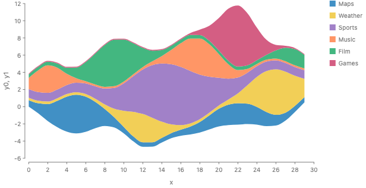
    </figure>
    <div class="code-label">Proposed: a streamgraph (JS)</div>
    <pre><code class="language-js">chart(topics)
  .flow(stack({ by: "topic", dir: "y", baseline: Align.wiggle() }))
  .mark(ribbon({ x: "x", h: "value", fill: "topic" }));</code></pre>
    <div class="code-label">Python</div>
    <pre><code class="language-python">gf.chart(topics).flow(gf.stack(by="topic", dir="y", baseline=Align.wiggle())).mark(
    gf.ribbon(x="x", h="value", fill="topic")
)</code></pre>
    <p class="note">
      The shortcut: the engine has no type for a thickness that is a function of
      x. Until it does, B is a rewrite into today's per-x flow. It resamples the
      series to the union grid, runs the per-x stack, and computes the baseline
      from the whole series before it places any slice. Section
      <a href="#implementation">"Implementation path"</a> says what the full fix
      is.
    </p>
  </section>

  <h2 id="terms">Terms</h2>
  <dl class="terms">
    <dt>Part.</dt>
    <dd>One child of a stack: a bar, or one series' band.</dd>
    <dt>Boundary.</dt>
    <dd>
      The line between two neighboring parts. In a stacked area each boundary is
      a curve over x.
    </dd>
    <dt>Glue.</dt>
    <dd>
      Two neighboring parts share one boundary, so no gap and no overlap can
      open between them. Stack has glue. Spread does not.
    </dd>
    <dt>Baseline.</dt>
    <dd>
      Where the bottom of a stack sits. For a stacked area it is 0. For a
      streamgraph it changes with x. GoFish already uses "baseline" for a node's
      local 0, the value that <code>alignment: "baseline"</code> lines up. This
      is the same meaning.
    </dd>
    <dt>Given whole.</dt>
    <dd>
      A size that the spec fixes before the parts are known, e.g., a 100% bar or
      a bottle shape.
    </dd>
    <dt>Profile.</dt>
    <dd>
      A thickness that is a function of the cross axis. A rect has a number as
      its height. A ribbon over x has a profile.
    </dd>
    <dt>Per-x form.</dt>
    <dd>
      <code>scatter({ by: "x" })</code> then <code>stack(...)</code>. The stack
      runs once inside each x slice and sees only that slice.
    </dd>
    <dt>Whole-series form.</dt>
    <dd>
      <code>stack(...)</code> of whole ribbons. The stack runs once and sees
      every series over all x.
    </dd>
    <dt>CanSum.</dt>
    <dd>
      The trait that says a unit's values add up (<a
        href="https://github.com/gofish-graphics/gofish-graphics/issues/1311"
        >#1311</a
      >). Stack checks it.
    </dd>
  </dl>

  <h2 id="relation">The one relation</h2>
  <p>
    Write the parts' amounts as f<sub>1</sub>, ..., f<sub>n</sub> and the
    boundaries as g<sub>0</sub> (the bottom) to g<sub>n</sub> (the top). Glue
    says:
  </p>
  <figure class="relation">
    <svg
      viewBox="0 0 680 210"
      role="img"
      aria-label="Three stacked bands f1, f2, f3 between boundaries g0 to g3. Equations: g1 minus g0 equals f1, g2 minus g1 equals f2, g3 minus g2 equals f3. One more condition picks the picture."
    >
      <path
        class="b1"
        d="M60,135 C160,120 260,150 400,125 L400,165 C260,180 160,160 60,170 Z"
      />
      <path
        class="b2"
        d="M60,95 C160,75 260,110 400,90 L400,125 C260,150 160,120 60,135 Z"
      />
      <path
        class="b3"
        d="M60,50 C160,35 260,60 400,45 L400,90 C260,110 160,75 60,95 Z"
      />
      <path class="bnd" d="M60,170 C160,160 260,180 400,165" />
      <path class="bnd" d="M60,135 C160,120 260,150 400,125" />
      <path class="bnd" d="M60,95 C160,75 260,110 400,90" />
      <path class="bnd" d="M60,50 C160,35 260,60 400,45" />
      <text x="50" y="175" text-anchor="end">
        g
        <tspan class="sub" dy="4">0</tspan>
      </text>
      <text x="50" y="140" text-anchor="end">
        g
        <tspan class="sub" dy="4">1</tspan>
      </text>
      <text x="50" y="100" text-anchor="end">
        g
        <tspan class="sub" dy="4">2</tspan>
      </text>
      <text x="50" y="55" text-anchor="end">
        g
        <tspan class="sub" dy="4">3</tspan>
      </text>
      <text class="lbl-f" x="230" y="157" text-anchor="middle">
        f
        <tspan class="sub" dy="4">1</tspan>
      </text>
      <text class="lbl-f" x="230" y="117" text-anchor="middle">
        f
        <tspan class="sub" dy="4">2</tspan>
      </text>
      <text class="lbl-f" x="230" y="76" text-anchor="middle">
        f
        <tspan class="sub" dy="4">3</tspan>
      </text>
      <text class="muted" x="230" y="200" text-anchor="middle">x</text>
      <text class="eq" x="440" y="60">
        g
        <tspan class="sub" dy="4">1</tspan>
        <tspan dy="-4">− g</tspan>
        <tspan class="sub" dy="4">0</tspan>
        <tspan dy="-4">= f</tspan>
        <tspan class="sub" dy="4">1</tspan>
      </text>
      <text class="eq" x="440" y="86">
        g
        <tspan class="sub" dy="4">2</tspan>
        <tspan dy="-4">− g</tspan>
        <tspan class="sub" dy="4">1</tspan>
        <tspan dy="-4">= f</tspan>
        <tspan class="sub" dy="4">2</tspan>
      </text>
      <text class="eq" x="440" y="112">
        g
        <tspan class="sub" dy="4">3</tspan>
        <tspan dy="-4">− g</tspan>
        <tspan class="sub" dy="4">2</tspan>
        <tspan dy="-4">= f</tspan>
        <tspan class="sub" dy="4">3</tspan>
      </text>
      <text class="muted" x="440" y="140">n equations, n + 1 unknowns.</text>
      <text class="side" x="440" y="166">One more condition</text>
      <text class="side" x="440" y="186">picks the picture.</text>
    </svg>
  </figure>
  <p>
    That is n equations in n + 1 unknowns. One more condition picks the picture.
    The literature agent's reading of Byron and Wattenberg (2008) and of d3,
    Plot, matplotlib and Vega supports this. Every stacking system answers that
    one question.
  </p>

  <div class="table-wrap wide">
    <table>
      <thead>
        <tr>
          <th>The extra condition</th>
          <th>What it draws</th>
          <th>Name today</th>
          <th>Local in x?</th>
        </tr>
      </thead>
      <tbody>
        <tr>
          <td>g<sub>0</sub> = 0</td>
          <td>stacked bars, stacked area</td>
          <td>
            d3 <code>stackOffsetNone</code>, Vega-Lite <code>"zero"</code>
          </td>
          <td>yes</td>
        </tr>
        <tr>
          <td>g<sub>0</sub> + g<sub>n</sub> = 0</td>
          <td>silhouette streamgraph (ThemeRiver)</td>
          <td>
            d3 <code>stackOffsetSilhouette</code>, Vega-Lite
            <code>"center"</code>
          </td>
          <td>yes</td>
        </tr>
        <tr>
          <td>g<sub>0</sub> at the midpoint of an ordered key</td>
          <td>Likert bars, population pyramid</td>
          <td>GoFish <code>Trait.diverging()</code> today</td>
          <td>yes</td>
        </tr>
        <tr>
          <td>
            g<sub>0</sub> minimizes the summed squared slope of the boundaries
          </td>
          <td>weighted wiggle streamgraph (Byron and Wattenberg)</td>
          <td>d3 and Plot <code>"wiggle"</code></td>
          <td>no, a running sum over x</td>
        </tr>
        <tr>
          <td>g<sub>0</sub> minimizes the unweighted wiggle</td>
          <td>the "deviation" baseline, a pointwise formula</td>
          <td>matplotlib <code>"wiggle"</code></td>
          <td>yes</td>
        </tr>
        <tr>
          <td>g<sub>n</sub> − g<sub>0</sub> = W, a given whole</td>
          <td>100% bar, mosaic, conditional density, a cut of a shape</td>
          <td>
            <code>normalize()</code>, <code>Tile.slice</code>, <code>cut</code>
          </td>
          <td>yes, but each f<sub>i</sub> becomes a share</td>
        </tr>
      </tbody>
    </table>
  </div>

  <p>
    The last row is the divide. If the whole W is given and the parts are given,
    the system has too many conditions. The parts must be rescaled to shares,
    f<sub>i</sub> times W over the total. So a divide needs more than a stack
    needs:
  </p>
  <ul>
    <li>the amounts must be CanSum, as for a stack;</li>
    <li>the total must not be 0;</li>
    <li>
      the result is a ratio, a share of the whole, and no longer the original
      unit.
    </li>
  </ul>
  <p>
    <code>stack({ size: field(f).normalize() })</code> already has exactly this
    type. It makes a new unit "f share by k" with CanSum
    (<code>fieldExpr.ts:625</code>).
    <a href="https://github.com/gofish-graphics/gofish-graphics/issues/1276"
      >#1276</a
    >
    already proposes that <code>Tile.slice</code> and <code>Tile.dice</code> are
    this same normalized stack.
  </p>
  <p>
    So Josh's two readings are both right, and they differ in a way the types
    can see:
  </p>
  <ul>
    <li>
      <strong>Stacking up.</strong> The data holds amounts. The whole is their
      sum. The extra condition is a baseline. Stacked bars, stacked area,
      cumulative line, waterfall, Gantt with dependencies, Likert.
    </li>
    <li>
      <strong>Dividing.</strong> The spec gives the whole: a box to fill, a
      shape, a density. The extra condition is the whole. The parts are shares.
      100% bars, mosaic, bottle, croissant, horizon, sankey link strands.
    </li>
  </ul>
  <p>
    The engine computes sizes bottom-up in both cases
    (<code>underlying-space.md</code>, "Why two walks"). The top-down forms
    today are either a bottom-up stack in share units (<code>normalize</code>)
    or a division of pixels after layout (<code>cut</code>,
    <code>treemap</code>). So the direction is decided by where the whole comes
    from: a sum of data (up) or a shape or box in the spec (down).
  </p>

  <h2 id="stack-spread">Stack and spread</h2>
  <p>
    <code>stack</code> is <code>Spread({ glue: true })</code> in the code
    (<code>stack.tsx:14</code>). They share:
  </p>
  <ul>
    <li>the split by <code>by</code>, <code>reverse</code> and the order;</li>
    <li><code>dir</code>;</li>
    <li>the cross-axis <code>alignment</code>;</li>
    <li>the <code>size</code> wrapper.</li>
  </ul>
  <p>The glue flag then picks a different answer for everything else:</p>
  <div class="table-wrap">
    <table>
      <thead>
        <tr>
          <th></th>
          <th>stack</th>
          <th>spread</th>
        </tr>
      </thead>
      <tbody>
        <tr>
          <td>Type of the result</td>
          <td>
            one continuous space, the sum (<code>distribute.ts:349</code>)
          </td>
          <td>
            separate spaces, ordinal over the keys
            (<code>distribute.ts:394</code>)
          </td>
        </tr>
        <tr>
          <td>Units</td>
          <td>unified, CanSum checked</td>
          <td>not unified</td>
        </tr>
        <tr>
          <td>Axis</td>
          <td>a number axis over the sum</td>
          <td>a category axis over the keys</td>
        </tr>
        <tr>
          <td>Spacing</td>
          <td>always 0</td>
          <td>a gap or a fixed pitch</td>
        </tr>
        <tr>
          <td>Placement</td>
          <td>tail to head, so a negative part goes back</td>
          <td>facing edges</td>
        </tr>
        <tr>
          <td>The equations above</td>
          <td>yes</td>
          <td>none</td>
        </tr>
      </tbody>
    </table>
  </div>
  <p>
    So stack and spread share how they split rows and where they put children
    across the axis. They do not share a type. The code supports Josh's newer
    reading.
  </p>

  <h2 id="stacked-grouped">Stacked bars and grouped bars</h2>
  <div class="grid-2 pair">
    <div>
      <figure>
        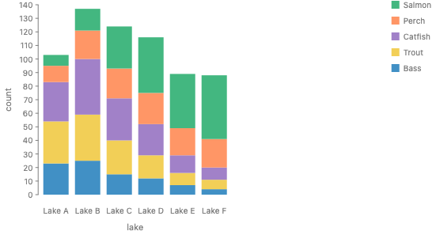
        <figcaption>stacked</figcaption>
      </figure>
      <pre><code class="language-js">chart(seafood)
  .flow(spread({ by: "lake", dir: "x" }), stack({ by: "species", dir: "y" }))
  .mark(rect({ w: 32, h: "count", fill: "species" }));</code></pre>
    </div>
    <div>
      <figure>
        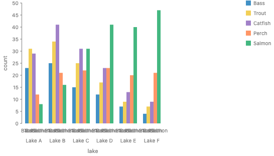
        <figcaption>grouped</figcaption>
      </figure>
      <pre><code class="language-js">chart(seafood)
  .flow(
    spread({ by: "lake", dir: "x", spacing: 12 }),
    spread({ by: "species", dir: "x", spacing: 0 })
  )
  .mark(rect({ w: 7, h: "count", fill: "species" }));</code></pre>
    </div>
  </div>
  <p>The two flows differ in four ways at once:</p>
  <ul>
    <li>the operator (<code>stack</code> against <code>spread</code>);</li>
    <li>its direction (y against x);</li>
    <li>the x axis (one level against two);</li>
    <li>
      the y domain (largest total, about 140, against largest single count,
      about 47).
    </li>
  </ul>
  <p>
    Only the y unit is shared. Grouped temperatures are fine, and stacked
    temperatures are a type error. So one switch between them would hide a
    change of type.
  </p>
  <p>
    A transition between them is an animation between two specs whose marks
    match by key (lake and species). The y scale moves too, as in d3's classic
    stacked-to-grouped example. That belongs to the transition work (<a
      href="https://github.com/gofish-graphics/gofish-graphics/issues/831"
      >#831</a
    >, "update is connect on time"), and needs no option on <code>stack</code>.
    The halfway frame below is emulated: both layouts are computed in data and
    the rows are interpolated.
  </p>
  <div class="grid-3">
    <figure>
      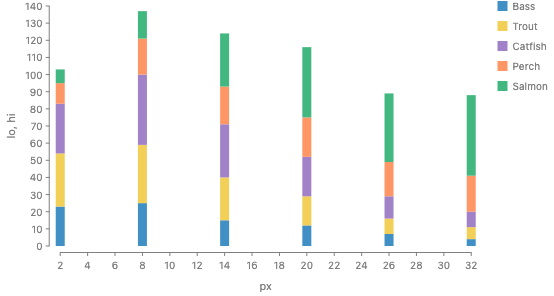
      <figcaption>t = 0</figcaption>
    </figure>
    <figure>
      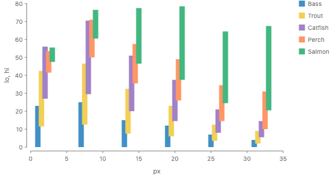
      <figcaption>t = 0.5 (emulated)</figcaption>
    </figure>
    <figure>
      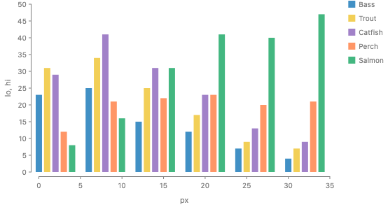
      <figcaption>t = 1</figcaption>
    </figure>
  </div>

  <h2 id="which-wiggle">Which wiggle</h2>
  <div class="grid-3">
    <figure>
      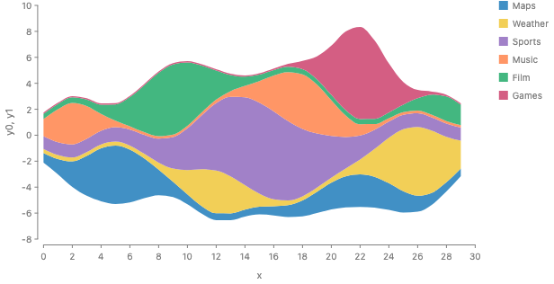
      <figcaption>deviation (local)</figcaption>
    </figure>
    <figure>
      
      <figcaption>weighted wiggle (d3, Plot)</figcaption>
    </figure>
    <figure>
      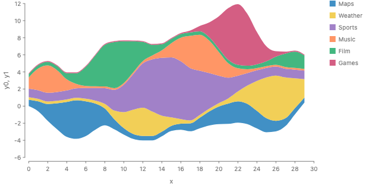
      <figcaption>SineStream</figcaption>
    </figure>
  </div>
  <p class="note">
    Same data and order. All three are emulated in <code>derive</code>.
  </p>
  <p>
    The literature has at least four wiggle baselines. They differ in what they
    make flat.
  </p>
  <ul>
    <li>
      <strong>Deviation</strong> (Byron and Wattenberg 2008). It keeps the
      boundaries close to 0. Its formula needs only one x, and its derivative
      also minimizes the unweighted wiggle. matplotlib's <code>wiggle</code> is
      close to it.
    </li>
    <li>
      <strong>Weighted wiggle</strong> (Byron and Wattenberg 2008). It flattens
      each band's slope, weighted by the band's thickness, so thick bands come
      out flattest. It is a running sum along x. d3, Plot and matplotlib's
      <code>weighted_wiggle</code> use it.
    </li>
    <li>
      <strong>SineStream</strong> (Bu et al. 2021). The weighted wiggle with a
      weight that also counts how fast a band changes, to reduce the sine
      illusion (the eye reads the gap between two parallel curves at a right
      angle, not vertically).
    </li>
    <li>
      <strong>L1 wiggle</strong> (Di Bartolomeo and Hu 2016). Absolute slopes
      instead of squared ones. I could not read this paper; SineStream reports
      that L1 prefers one large bend over several small ones.
    </li>
  </ul>
  <p>
    No study picks a best one. Thudt et al. 2016 found the weighted wiggle
    streamgraph a little easier to read than ThemeRiver and the stacked area for
    some tasks, with small differences. The weighted wiggle is the default in d3
    and Plot because they followed Byron and Wattenberg, so it is the one users
    expect, not a proven best. Both later papers pair their baseline with an
    order, and the order changes the picture as much as the baseline does.
  </p>
  <p>
    So <code>Align</code> is a strategy family with a function escape hatch,
    like the other families (<a
      href="https://github.com/gofish-graphics/gofish-graphics/issues/1101"
      >#1101</a
    >). <code>Align.wiggle()</code> is the weighted wiggle, so a spec ported
    from d3 or Plot draws the same picture. <code>Align.deviation()</code> and
    <code>Align.sineStream()</code> are small additions. A custom strategy is a
    function that takes the parts on the shared grid, in stack order, and
    returns the offset at each x. d3's offsets have the same shape.
  </p>

  <h2 id="baseline-lives">Where the baseline lives</h2>
  <div class="grid-2">
    <figure>
      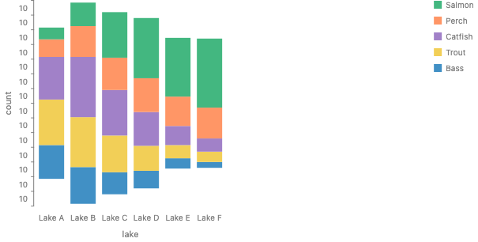
      <figcaption>today: <code>alignment: "middle"</code></figcaption>
    </figure>
    <figure>
      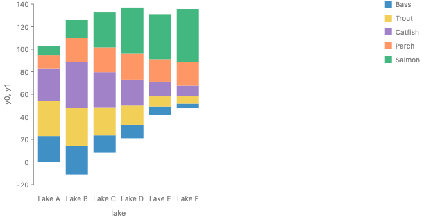
      <figcaption>proposed: <code>Align.wiggle()</code>, emulated</figcaption>
    </figure>
  </div>
  <p>Baselines come in two kinds.</p>
  <ul>
    <li>
      <strong>One stack at a time.</strong> Zero, center, diverging, expand and
      deviation each need only one stack. They work for any mark, rects
      included. GoFish already has one:
      <code>spread({ alignment: "middle" })</code> centers each stack, and the
      gallery streamgraph uses it.
    </li>
    <li>
      <strong>Neighbors.</strong> Weighted wiggle, SineStream and L1 need the
      stacks on either side. Only the operator that loops over the cross axis
      sees them.
    </li>
  </ul>
  <p>
    So the baseline is the alignment of the operator that loops over the cross
    axis. In bar charts and in the per-x form that is the outer
    <code>spread</code> or <code>scatter</code>, and the option is its
    <code>alignment</code>: <code>"middle"</code> today,
    <code>Align.wiggle()</code> proposed. That operator reads each child stack's
    part boundaries by key, which are the child's own measurements reported up
    to it, so it stays local.
  </p>
  <p>
    In the whole-series form the loop over x sits inside each profile, so no
    outer operator exists. There,
    <code>stack({ baseline: Align.wiggle() })</code> is short for writing the
    <code>scatter</code> by x out with that alignment. The core is
    <code>alignment</code> on the operator that loops over the cross axis, and
    <code>baseline</code> on a stack of profiles is sugar with an exact rewrite.
  </p>
  <pre><code class="language-js">// centered stacked bars (today)
chart(seafood)
  .flow(
    spread({ by: "lake", dir: "x", alignment: "middle" }),
    stack({ by: "species", dir: "y" })
  )
  .mark(rect({ w: 32, h: "count", fill: "species" }));

// wiggle stacked bars (proposed)
chart(seafood)
  .flow(
    spread({ by: "lake", dir: "x", alignment: Align.wiggle() }),
    stack({ by: "species", dir: "y" })
  )
  .mark(rect({ w: 32, h: "count", fill: "species" }));

// streamgraph: the sugar and what it is short for
chart(topics)
  .flow(stack({ by: "topic", dir: "y", baseline: Align.wiggle() }))
  .mark(ribbon({ x: "x", h: "value", fill: "topic" }));

chart(topics)
  .flow(
    scatter({ by: "x", x: "x", alignment: Align.wiggle() }),
    stack({ by: "topic", dir: "y" })
  )
  .mark(ribbon({ h: "value", fill: "topic" }));</code></pre>

  <h2 id="stack-reads">What the stack reads</h2>
  <p>
    Today each node reports a box, one interval per axis
    (<code>underlyingSpace.ts:87</code>). A ribbon's box runs from its lowest to
    its highest y over all x. A stack of boxes puts each ribbon above the whole
    ribbon before it, which draws a ridgeline. So boxes alone cannot make a
    stacked area.
  </p>
  <p>
    The stack in B reads a <strong>profile</strong>: each child's extent along
    <code>dir</code> as a function of the cross axis, in data units. For a
    ribbon it is the <code>h</code> channel over x. For a rect it is a constant.
    The data gives it before layout, so the stack's axis can be the sum, and
    CanSum can be checked at each x.
  </p>
  <p>
    The geometry interface (<code>geometry/index.ts</code>: box, enclosing
    circle, outline) is the pixel counterpart, and it answers after layout. An
    outline gives a pixel profile of any shape: its lowest and highest y at each
    x. Contour spacing needs exactly that, e.g., ridgelines that never overlap,
    or tidy trees. That is a <code>spread</code> with no sum. So there are two
    profiles. A stack adds data profiles. A spread can space shapes by pixel
    profiles. A shape that has only a pixel outline, e.g., a circle or an image,
    cannot be stacked this way, because its outline is not an amount.
  </p>

  <h2 id="for-each-x">Where the "for each x" is written</h2>
  <p>
    The flow already says where the loop over x is. This decides which knobs a
    spelling has.
  </p>
  <ul>
    <li>
      <strong>Per-x form</strong> (<code>scatter</code> by x outside,
      <code>stack</code> inside). Each slice's stack sees only its own x. The
      order can change at every x, and that is the ribbon chart. A slice cannot
      see its neighbors, so weighted wiggle and the inside-out order cannot live
      on that stack.
    </li>
    <li>
      <strong>Whole-series form</strong> (<code>stack</code> of whole ribbons).
      The stack sees every series over all x. The order is one order for all x,
      and the baseline can use the whole series.
    </li>
  </ul>
  <p>
    Both are real charts. No one spelling has both kinds of knob, so GoFish
    needs both spellings. B makes the whole-series form a plain
    <code>stack</code>. Then the two spellings differ only in where
    <code>scatter</code> sits.
  </p>
  <div class="grid-2">
    <figure>
      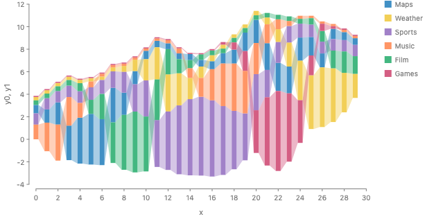
      <figcaption>
        The ribbon chart is the per-x form: rects re-sorted at each x, joined by
        ribbons.
      </figcaption>
    </figure>
    <figure>
      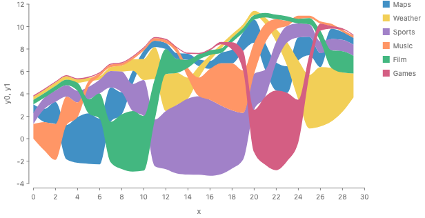
      <figcaption>
        The same order drawn as one band per series overlaps itself, because a
        band cannot jump across its neighbors (<code>o-per-x-rank-area</code>).
      </figcaption>
    </figure>
  </div>

  <h2 id="sampling">Sampling: do the boundaries need common points?</h2>
  <p>
    No. Two neighboring bands must draw the same boundary. Each boundary needs
    only the sample points of the series under it.
  </p>
  <figure class="fig-single">
    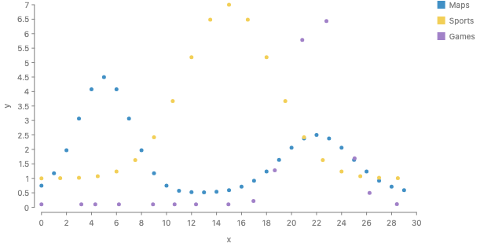
    <figcaption>
      Three series measured at different x. Maps is measured every 1.0. Sports
      is measured every 1.5. Games is measured at 15 jittered x.
    </figcaption>
  </figure>

  <div class="grid-2">
    <div>
      <p>
        <strong>Today.</strong> <code>scatter</code> by x, then
        <code>stack</code>, stacks only rows that share an exact x. It draws
        this with no warning:
      </p>
      <figure>
        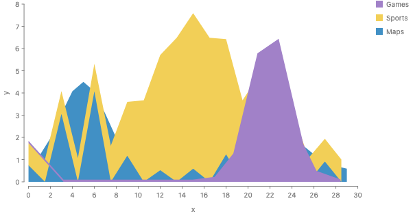
      </figure>
      <p>
        Sports turns into a sawtooth between 0 and the top of Maps. Games starts
        as a thin sliver and slides to the floor. If the rows are not sorted by
        x, the ribbon also zigzags back along x, because a ribbon joins its
        pieces in data order (<code>connect.tsx:551</code>).
      </p>
    </div>
    <div>
      <p>
        <strong>Union grid, as ggplot2 does it (emulated).</strong> Every series
        is read at the union of all x by linear interpolation, then stacked.
      </p>
      <figure>
        
      </figure>
    </div>
  </div>

  <p>
    <strong>One boundary per series sum (emulated).</strong> Boundary k is f<sub
      >1</sub
    >
    + ... + f<sub>k</sub>, read only at the union of the samples of f<sub
      >1</sub
    >
    to f<sub>k</sub>. So the boundaries have 2, 30, 40 and 54 points. Each band
    is the region between two boundaries, and neighboring bands use the same
    point array. The picture is the same, with fewer points on the lower
    boundaries. The dots mark each boundary's own points.
  </p>
  <figure class="fig-single">
    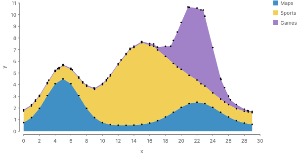
  </figure>
  <p>
    A <code>ribbon</code> cannot draw this. Each ribbon anchor gives both edges
    at one x, so a band whose top and bottom have different x samples has to be
    a <code>polygon</code>, and <code>polygon</code> has no <code>curve</code>.
  </p>

  <p>
    <strong>What the precedent does</strong> (from the literature notes,
    <code>research/streamgraphs.md</code>):
  </p>
  <ul>
    <li>
      <strong>ggplot2 <code>stat_align</code></strong> (the default for
      <code>geom_area</code> since 3.4.0). It reads every series by linear
      interpolation at the union of all x, plus each zero crossing. It pads each
      series to 0 just outside its own range.
    </li>
    <li>
      <strong>Vega-Lite.</strong> It fills in 0 at a missing x, so a series dips
      to 0 between its own samples.
    </li>
    <li>
      <strong>Observable Plot.</strong> No alignment. On ggplot2's own
      misaligned example nothing stacks.
    </li>
    <li>
      <strong>ggstream.</strong> It snaps to a grid of 1000 points and smooths
      each series, then stacks.
    </li>
    <li>
      <strong>Mascot.</strong> Its densify step makes vertices at every unique x
      of the whole table before the divide, so the samples are common by
      construction.
    </li>
  </ul>

  <p>
    <strong>Curve order.</strong> Today GoFish stacks the points and then curves
    each boundary on its own. With the default monotone curve this differs from
    curving each series and then adding. The Games band even gets a negative
    thickness near x = 14.6, so two bands overlap.
  </p>
  <div class="grid-2">
    <figure>
      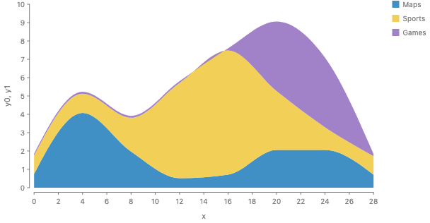
      <figcaption>stack, then curve (today)</figcaption>
    </figure>
    <figure>
      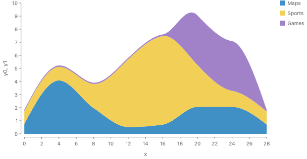
      <figcaption>curve, then sum</figcaption>
    </figure>
  </div>
  <figure class="fig-single">
    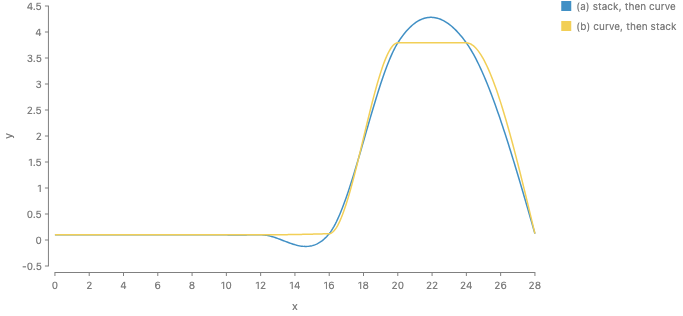
  </figure>
  <p>
    The literature agent checked d3's curves the same way. Curves that are
    linear in the values (linear, basis, cardinal, natural) give the same
    boundaries either way. Cardinal and natural still overshoot, so they can
    still give a negative thickness. Monotone and Catmull-Rom are not linear in
    the values, so the order matters for them.
  </p>

  <p><strong>The rule B uses.</strong></p>
  <ol>
    <li>Curve each series by itself.</li>
    <li>
      Read every series at the union of all x positions. For a curve that is not
      linear, add points between them.
    </li>
    <li>Add the series.</li>
    <li>Draw every band between two boundaries that both neighbors share.</li>
  </ol>
  <p>
    The union grid is the simple choice. It lets <code>ribbon</code> draw each
    band, because both edges have the same x samples. A grid per boundary saves
    points but needs a new band mark, and only matters for very large data.
  </p>
  <p>
    For a function of x with no samples at all, e.g.,
    <code>x.density()</code> from
    <a href="https://github.com/gofish-graphics/gofish-graphics/issues/980"
      >#980</a
    >, the renderer picks the grid. For now that is a fixed count (512). Picking
    points by screen error comes later, as Josh already deferred in
    <a href="https://github.com/gofish-graphics/gofish-graphics/issues/1332"
      >#1332</a
    >.
  </p>

  <h2 id="approaches">Approaches</h2>

  <div class="card" id="approach-a">
    <h3>A. Per-x everywhere (today, with fixes)</h3>
    <p>
      Keep <code>scatter</code> by x then <code>stack</code>. Add the baselines
      and orders as data helpers in <code>derive</code>.
    </p>
    <pre><code class="language-js">chart(topics)
  .flow(
    derive((rows) => stackRows(rows, { offset: "wiggle" })), // adds y0, y1
    scatter({ by: "x", x: "x" }),
    scatter({ by: "topic", yMin: "y0", yMax: "y1" })
  )
  .mark(ribbon({ fill: "topic" }));</code></pre>
    <ul>
      <li>It adds no operator.</li>
      <li>
        Wiggle and inside-out need a helper of about 20 lines each, written
        outside the flow.
      </li>
      <li>
        Misaligned grids stay a silent bug unless <code>stack</code> checks for
        them.
      </li>
      <li>
        The curve order stays wrong unless the ribbon learns to curve each part
        before the stack.
      </li>
      <li>
        Silhouette needs
        <a href="https://github.com/gofish-graphics/gofish-graphics/issues/1343"
          >#1343</a
        >
        fixed (<code>scatter</code> drops <code>alignment</code> on the free
        axis today).
      </li>
    </ul>
  </div>

  <div class="card" id="approach-b">
    <h3>B. Whole-series stack <span class="tag">recommended</span></h3>
    <p>
      <code>stack</code> takes children whose thickness along
      <code>dir</code> is a profile over the cross axis. It adds the profiles,
      which is the same addition as for numbers, done at every x. The glue is
      the shared boundary. The baseline is an option of the stack. The ribbon is
      a plain mark with <code>x</code> and <code>h</code>.
    </p>
    <pre><code class="language-js">// stacked area
chart(topics)
  .flow(stack({ by: "topic", dir: "y" }))
  .mark(ribbon({ x: "x", h: "value", fill: "topic" }));

// streamgraph, centered
chart(topics)
  .flow(stack({ by: "topic", dir: "y", baseline: Align.center() }))
  .mark(ribbon({ x: "x", h: "value", fill: "topic" }));

// streamgraph, wiggle, inside-out order
chart(topics)
  .flow(
    stack({
      by: field("topic").sort(Order.insideOut("value")),
      dir: "y",
      baseline: Align.wiggle(),
    })
  )
  .mark(ribbon({ x: "x", h: "value", fill: "topic" }));

// 100%: the whole is given, the parts are shares at each x
chart(topics)
  .flow(stack({ by: "topic", dir: "y" }))
  .mark(ribbon({ x: "x", h: field("value").normalize(), fill: "topic" }));

// stacked densities: no grid in the spec
chart(groups)
  .flow(stack({ by: "group", dir: "y" }))
  .mark(ribbon({ h: x.density(), fill: "group" }));</code></pre>
    <div class="code-label">Python</div>
    <pre><code class="language-python">gf.chart(topics).flow(
    gf.stack(
        by=gf.field("topic").sort(Order.inside_out("value")),
        dir="y",
        baseline=Align.wiggle(),
    )
).mark(gf.ribbon(x="x", h="value", fill="topic"))</code></pre>
    <p>
      How it answers Josh's locality rule. Josh rejected a flow
      <code>stack</code> that reaches into a ribbon's vertices (croissant round
      6). In B the stack does not read vertices. It reads each child's
      thickness, as it does for a rect, and that thickness is a function. A
      rect's thickness is the special case of a function that does not change
      with x.
    </p>
    <p>How it composes:</p>
    <ul>
      <li>
        <strong>Coordinates.</strong> In polar, the same spec draws a radial
        stacked area (<code>m-radial-stacked-area</code>).
      </li>
      <li>
        <strong>Partition.</strong> <code>partition</code> then
        <code>stack</code> is the stacked histogram. Partition makes cells on x,
        and the stack works inside each cell.
      </li>
      <li>
        <strong>Spread.</strong> A <code>spread</code> of whole ribbons is a
        ridgeline: separate spaces, no glue. With profiles, a spread could also
        space ridges by their outlines so they never overlap. That uses the same
        profile type and is the same idea as outline spacing for tidy trees.
      </li>
      <li>
        <strong
          >Distributions (<a
            href="https://github.com/gofish-graphics/gofish-graphics/issues/980"
            >#980</a
          >).</strong
        >
        <code>ribbon({ h: x.density() })</code> is a profile with no rows.
        Stacking densities weighted by their share draws the mixture density.
        Normalizing them draws the conditional density, P(group given v), as R's
        <code>cdplot</code>. This gives approach B of
        <a href="https://github.com/gofish-graphics/gofish-graphics/issues/1332"
          >#1332</a
        >
        a home, and it needs no <code>sweep</code>.
      </li>
      <li>
        <strong>Animation.</strong> A baseline is a value of the stack, so a
        transition between zero and wiggle tweens the baseline.
      </li>
    </ul>
    <p>Overlap check:</p>
    <ul>
      <li>
        <strong>The per-x form.</strong> B's stacked area draws the same picture
        as the per-x form when the series share x and the curve is linear.
        Define B by that rewrite (resample, then per-x stack), and the overlap
        is an exact composition.
      </li>
      <li>
        <strong><code>.cut()</code> of a total area.</strong> Exact composition
        of a stack of shares and <code>intersect</code>, as below.
      </li>
      <li>
        <strong><code>spread</code>.</strong> Small shared case only: the split
        and the cross-axis alignment.
      </li>
    </ul>
    <p>Trade-offs:</p>
    <ul>
      <li>
        New terms: <code>Align</code> and maybe <code>Order.insideOut</code>.
        The option name <code>baseline</code> is already Josh's word for this in
        <a href="https://github.com/gofish-graphics/gofish-graphics/issues/809"
          >#809</a
        >.
      </li>
      <li>
        The engine needs a profile type for full support (see
        <a href="#implementation">"Implementation path"</a>).
      </li>
      <li>
        A per-x sort written on a whole-series stack is an error, because one
        order holds for all x. The message points at the per-x form.
      </li>
    </ul>
  </div>

  <div class="card" id="approach-c">
    <h3>C. Divide first (Mascot)</h3>
    <p>Draw the total area, then cut it by group at each x.</p>
    <pre><code class="language-js">chart(topics).mark(
  ribbon({ x: "x", h: "value", fill: "topic" }).cut({
    by: "topic",
    dir: "y",
    baseline: Align.wiggle(),
  })
);</code></pre>
    <ul>
      <li>It has the whole-series view, so wiggle and inside-out fit.</li>
      <li>
        It is the right spelling when the spec draws the whole first: a bottle,
        a horizon chart, sankey link strands, a picture divided into a pie.
      </li>
      <li>
        For a stacked area the whole is only the sum of the parts. So the user
        writes a total that is not given, and <code>cut</code> must invert it
        into shares and multiply back. That is the same stack under another
        name.
      </li>
      <li>
        <code>cut</code> today has three modes (weight, cells, a group per
        vertex). The weight mode has the type of a normalized stack, and the
        cells mode has the type of <code>partition</code>. One name over two
        types.
      </li>
    </ul>
  </div>

  <div class="card" id="approach-d">
    <h3>
      D. <code>.stack()</code> on the mark (<a
        href="https://github.com/gofish-graphics/gofish-graphics/issues/290"
        >#290</a
      >)
    </h3>
    <pre><code class="language-js">chart(topics).mark(
  ribbon({ x: "x", h: "value", fill: "topic" }).stack({ by: "topic", dir: "y" })
);</code></pre>
    <ul>
      <li>
        It reads like the whole-series form but rewrites to the per-x form, so
        it hides which knobs exist.
      </li>
      <li>
        On a ribbon it has three readings: a ridgeline, a stacked area, or a
        ribbon chart.
      </li>
      <li>Rejected.</li>
    </ul>
  </div>

  <h2 id="examples">Examples</h2>
  <p>
    Each example shows the render, the proposed B spelling, and today's code.
  </p>

  <div class="card">
    <h3>Stacked area</h3>
    <figure>
      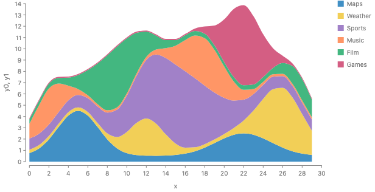
    </figure>
    <div class="code-label">Proposed</div>
    <pre><code class="language-js">chart(topics)
  .flow(stack({ by: "topic", dir: "y" }))
  .mark(ribbon({ x: "x", h: "value", fill: "topic" }));</code></pre>
    <div class="code-label">Today</div>
    <pre><code class="language-js">chart(topics)
  .flow(scatter({ by: "x", x: "x" }), stack({ by: "topic", dir: "y" }))
  .mark(ribbon({ h: "value", fill: "topic" }));</code></pre>
  </div>

  <div class="card">
    <h3>Silhouette</h3>
    <figure>
      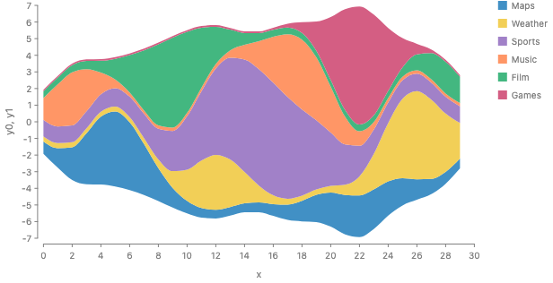
    </figure>
    <div class="code-label">Proposed</div>
    <pre><code class="language-js">chart(topics)
  .flow(stack({ by: "topic", dir: "y", baseline: Align.center() }))
  .mark(ribbon({ x: "x", h: "value", fill: "topic" }));</code></pre>
    <div class="code-label">Today</div>
    <pre><code class="language-js">// needs #1343; the y: 0 form runs but draws no y axis
chart(topics)
  .flow(
    scatter({ by: "x", x: "x", alignment: "middle" }),
    stack({ by: "topic", dir: "y" })
  )
  .mark(ribbon({ h: "value", fill: "topic" }));</code></pre>
  </div>

  <div class="card">
    <h3>Wiggle, and wiggle with the inside-out order</h3>
    <div class="grid-2">
      <figure>
        
        <figcaption>wiggle</figcaption>
      </figure>
      <figure>
        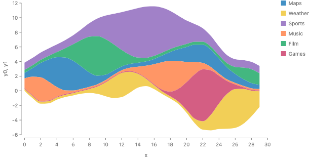
        <figcaption>wiggle, inside-out order</figcaption>
      </figure>
    </div>
    <div class="code-label">Proposed</div>
    <pre><code class="language-js">chart(topics)
  .flow(
    stack({
      by: field("topic").sort(Order.insideOut("value")),
      dir: "y",
      baseline: Align.wiggle(),
    })
  )
  .mark(ribbon({ x: "x", h: "value", fill: "topic" }));</code></pre>
    <details>
      <summary>Today (emulated, 10 lines)</summary>
      <pre><code class="language-js">// emulated: about 20 lines each for the offset and the order
chart(topics)
  .flow(
    derive((rows) =>
      stackRows(rows, { offset: "wiggle", order: orderInsideOut(rows) })
    ),
    scatter({ by: "x", x: "x" }),
    scatter({ by: "topic", yMin: "y0", yMax: "y1" })
  )
  .mark(ribbon({ fill: "topic" }));</code></pre>
    </details>
  </div>

  <div class="card">
    <h3>Expand (100%)</h3>
    <figure>
      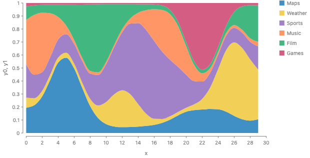
    </figure>
    <div class="code-label">Proposed</div>
    <pre><code class="language-js">chart(topics)
  .flow(stack({ by: "topic", dir: "y" }))
  .mark(ribbon({ x: "x", h: field("value").normalize(), fill: "topic" }));</code></pre>
  </div>

  <div class="card">
    <h3>Diverging</h3>
    <figure>
      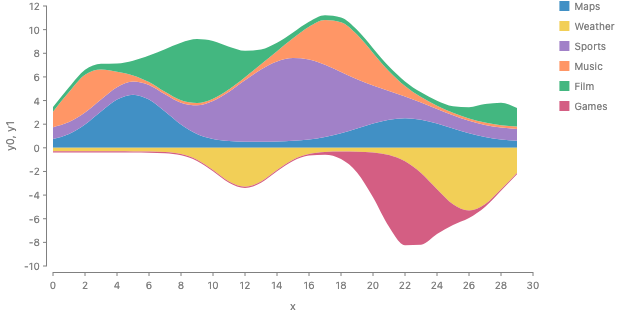
    </figure>
    <div class="code-label">Proposed</div>
    <pre><code class="language-js">// signed parts go below the baseline, as Likert bars do today
chart(topicsSigned)
  .flow(stack({ by: "topic", dir: "y" }))
  .mark(ribbon({ x: "x", h: "value", fill: "topic" }));</code></pre>
  </div>

  <div class="card">
    <h3>Series on different x grids</h3>
    <figure>
      
    </figure>
    <div class="code-label">Proposed</div>
    <pre><code class="language-js">// the same spec as any stacked area; the stack resamples
chart(sampled)
  .flow(stack({ by: "c", dir: "y" }))
  .mark(ribbon({ x: "x", h: "y", fill: "c", curve: Curve.linear }));</code></pre>
  </div>

  <div class="card">
    <h3>Ribbon chart (order changes at each x)</h3>
    <figure>
      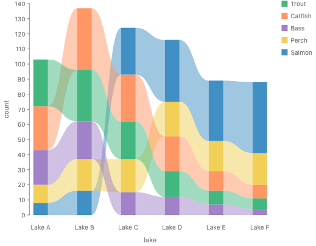
    </figure>
    <div class="code-label">Proposed: stays the per-x form</div>
    <pre><code class="language-js">chart(seafood)
  .flow(
    spread({ by: "lake", dir: "x", spacing: 48 }),
    stack({ by: field("species").sort("count"), dir: "y" })
  )
  .mark(rect({ w: 24, h: "count", fill: "species" }).name("bars"))
  .layer(
    chart(selectAll("bars"))
      .flow(group({ by: "species" }))
      .mark(ribbon({ fill: "species", opacity: 0.5 }))
  );</code></pre>
    <figure>
      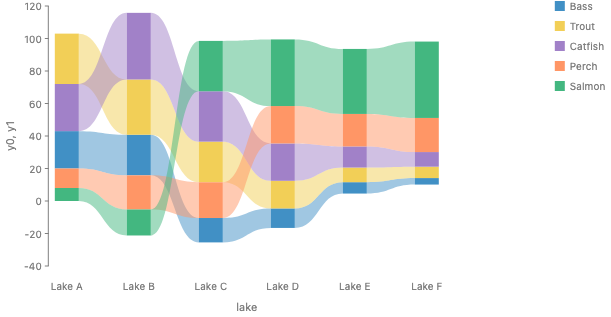
      <figcaption>
        An earlier version of this page showed the ribbon chart drawn with a
        wiggle baseline next to a spec with no baseline. That spec draws a zero
        baseline, above. With a wiggle baseline it is the spec below (proposed;
        the render is emulated).
      </figcaption>
    </figure>
    <pre><code class="language-js">chart(seafood)
  .flow(
    spread({ by: "lake", dir: "x", spacing: 48, alignment: Align.wiggle() }),
    stack({ by: field("species").sort("count"), dir: "y" })
  )
  .mark(rect({ w: 24, h: "count", fill: "species" }).name("bars"))
  .layer(
    chart(selectAll("bars"))
      .flow(group({ by: "species" }))
      .mark(ribbon({ fill: "species", opacity: 0.5 }))
  );</code></pre>
  </div>

  <div class="card">
    <h3>Stacked density and conditional density</h3>
    <div class="grid-2">
      <figure>
        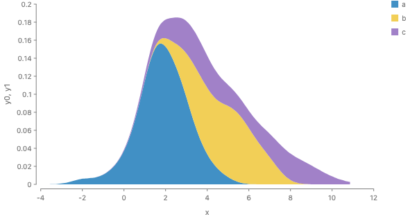
        <figcaption>the mixture density</figcaption>
      </figure>
      <figure>
        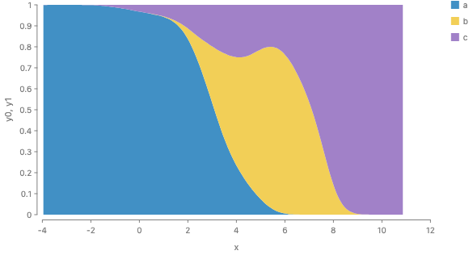
        <figcaption>conditional density, P(group given v)</figcaption>
      </figure>
    </div>
    <div class="code-label">Proposed</div>
    <pre><code class="language-js">// the mixture density
chart(groups)
  .flow(stack({ by: "group", dir: "y" }))
  .mark(ribbon({ h: x.density().times(x.mass()), fill: "group" }));

// conditional density, P(group given v)
chart(groups)
  .flow(stack({ by: "group", dir: "y" }))
  .mark(ribbon({ h: x.density().times(x.mass()).normalize(), fill: "group" }));</code></pre>
    <p class="note">
      <code>x.mass()</code> and <code>.times()</code> are placeholders.
      <a href="https://github.com/gofish-graphics/gofish-graphics/issues/980"
        >#980</a
      >
      has not decided whether a group's density carries its mass.
    </p>
  </div>

  <div class="card">
    <h3>Ridgeline (a spread, for contrast)</h3>
    <figure>
      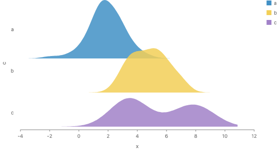
    </figure>
    <div class="code-label">Proposed</div>
    <pre><code class="language-js">chart(groups)
  .flow(spread({ by: "group", dir: "y", anchor: "baseline", spacing: 70 }))
  .mark(ribbon({ h: x.density(), fill: "group" }));</code></pre>
  </div>

  <div class="card">
    <h3>Croissant (cells, not a stack)</h3>
    <figure>
      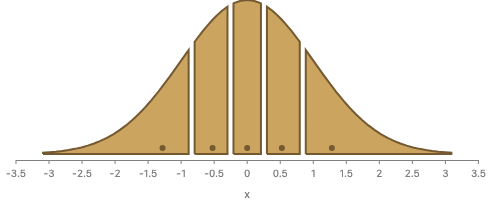
    </figure>
    <div class="code-label">Proposed</div>
    <pre><code class="language-js">// partition makes cells at quantiles; intersect clips the density to each
chart(days)
  .mark(ribbon({ h: x.density() }).name("density").hidden())
  .layer(
    chart(days)
      .flow(partition({ by: x.bin(Bin.quantiles(10)) }))
      .mark(intersect([ref("density"), region({ inset: 3 })]))
  );</code></pre>
    <p>
      Partition has the type of positions. Its cells sit at their places on one
      scale, and nothing is added. It is not a stack and does not need a
      baseline.
    </p>
  </div>

  <div class="card">
    <h3>Horizon (a divide that moves its pieces)</h3>
    <figure>
      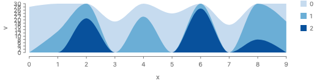
    </figure>
    <p>
      A horizon chart cuts one area into bands of a fixed height and lays the
      bands on top of each other. Cells along y and intersect make the bands,
      but they stay in place. So a horizon chart needs a cut that also moves its
      pieces: partition, then intersect, then a layout of the pieces. This is
      where <code>.cut()</code> is the natural word.
    </p>
  </div>

  <div class="card">
    <h3>Cumulative line and waterfall (one stack along x)</h3>
    <div class="grid-2">
      <figure>
        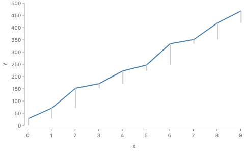
        <figcaption>cumulative line</figcaption>
      </figure>
      <figure>
        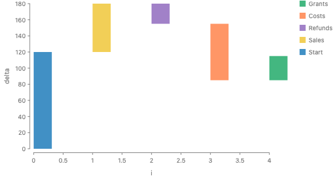
        <figcaption>waterfall</figcaption>
      </figure>
    </div>
    <p>
      <code>stack({ by: "x", dir: "y" })</code> with parts placed along x draws
      these today. Signed parts go back down. This is the per-part stack with no
      profiles, and B leaves it alone.
    </p>
  </div>

  <div class="card">
    <h3>Stack of stacks</h3>
    <figure>
      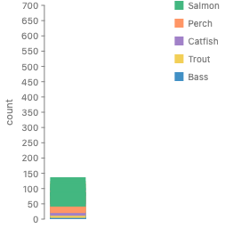
    </figure>
    <p>
      Typed right and placed wrong today: every inner stack draws from 0 (<a
        href="#bugs"
        >bug list below</a
      >).
    </p>
  </div>

  <div class="card">
    <h3>Icicle and sunburst</h3>
    <div class="grid-2">
      <figure>
        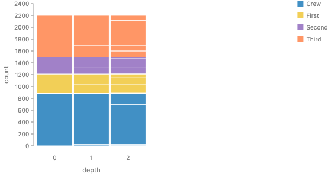
        <figcaption>icicle</figcaption>
      </figure>
      <figure>
        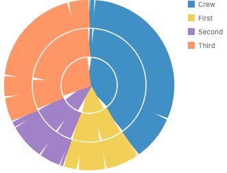
        <figcaption>sunburst</figcaption>
      </figure>
    </div>
    <p>
      A stack per depth lines up only because every depth has the same total.
      Read as a divide, each parent cell is cut into its children, as Mascot's
      stratify does. This is a hierarchy of given wholes, so it is a divide.
    </p>
  </div>

  <h2 id="precedent">Precedent</h2>
  <div class="table-wrap wide">
    <table>
      <thead>
        <tr>
          <th>System</th>
          <th>What the user writes</th>
          <th>Baseline</th>
          <th>Order</th>
          <th>Misaligned x</th>
        </tr>
      </thead>
      <tbody>
        <tr>
          <td>d3-shape</td>
          <td>
            <code>d3.stack().offset(d3.stackOffsetWiggle)</code><br /><code
              >.order(d3.stackOrderInsideOut)</code
            >
          </td>
          <td>none, expand, diverging, silhouette, wiggle</td>
          <td>none, ascending, descending, insideOut, reverse, appearance</td>
          <td>not handled, keys must align</td>
        </tr>
        <tr>
          <td>Vega-Lite</td>
          <td><code>"y": { "stack": "center" }</code></td>
          <td>zero, center, normalize</td>
          <td>sort by a field</td>
          <td>fills 0 at a missing x</td>
        </tr>
        <tr>
          <td>Observable Plot</td>
          <td><code>Plot.areaY(data, { x, y, offset: "wiggle" })</code></td>
          <td>normalize, center, wiggle</td>
          <td>inside-out by default with wiggle</td>
          <td>none</td>
        </tr>
        <tr>
          <td>ggplot2</td>
          <td>
            <code>geom_area(position = "stack")</code>,
            <code>position_fill()</code>
          </td>
          <td>zero, fill</td>
          <td>factor order</td>
          <td><code>stat_align</code>: union of x, linear</td>
        </tr>
        <tr>
          <td>ggstream</td>
          <td><code>geom_stream(type = "mirror")</code></td>
          <td>mirror, ridge, proportional</td>
          <td>factor order</td>
          <td>1000-point grid</td>
        </tr>
        <tr>
          <td>matplotlib</td>
          <td><code>stackplot(x, ys, baseline="weighted_wiggle")</code></td>
          <td>zero, sym, wiggle, weighted_wiggle</td>
          <td>the order given</td>
          <td>one x array for all</td>
        </tr>
        <tr>
          <td>Mascot</td>
          <td>
            <code>densify</code>, then <code>divide</code>, then a stack layout
          </td>
          <td><code>vertCellAlignment</code></td>
          <td>the divide's order</td>
          <td>densify gives common vertices</td>
        </tr>
        <tr>
          <td>productplots</td>
          <td><code>hbar</code>, <code>hspine</code>, <code>vspine</code></td>
          <td>zero</td>
          <td>factor order</td>
          <td>n/a</td>
        </tr>
      </tbody>
    </table>
  </div>
  <p>What the precedent shows:</p>
  <ul>
    <li>
      Every system puts the baseline and order on the stacking step, which sees
      the whole table. Plot's <code>areaY</code> looks like an exception only
      because it applies <code>stackY</code> for you.
    </li>
    <li>
      productplots is the clearest precedent for two directions.
      <code>hbar</code> stacks amounts against a common scale.
      <code>hspine</code> and <code>vspine</code> divide a given whole by
      shares. Its stacked bar is "1 hbar and 1 vspine", which rests on f(x, y) =
      f(y given x) f(x).
    </li>
    <li>
      No system states the boundary rule. Each one shares a boundary because one
      array of numbers feeds both bands.
    </li>
  </ul>

  <h2 id="implementation">Implementation path</h2>
  <ol>
    <li>
      <strong>Shortcut, now.</strong> B is a rewrite at flow lowering. A
      <code>stack</code> whose children are collective marks with
      <code>x</code> lowers to:
      <ul>
        <li>curve each series;</li>
        <li>resample at the union grid;</li>
        <li>compute the baseline and order from the whole series;</li>
        <li>run the per-x <code>scatter</code> and <code>stack</code>;</li>
        <li>connect with one ribbon per series.</li>
      </ul>
      This matches how stacked areas run today, so it costs little. It is a
      declared shortcut, because the stack peeks at the mark kind to know that a
      child is a profile.
    </li>
    <li>
      <strong>Full fix.</strong> A profile type in the underlying space: an
      extent along <code>dir</code> that is a function of the cross axis. Today
      each axis carries one interval (<code>underlyingSpace.ts:87</code>) and
      the two axes are independent (<code>dims.ts:592</code>). The same type
      would give outline spacing for <code>spread</code> (ridgelines that never
      overlap, tidy trees).
    </li>
    <li>
      <strong>Fixes that stand alone</strong> (<a href="#bugs">bugs below</a>).
      They are worth doing in any approach.
    </li>
  </ol>

  <h2 id="bugs">Bugs found (not filed yet)</h2>
  <ol>
    <li>
      Series on different x grids stack wrong with no warning
      (<code>s-naive</code>). The per-x stack only stacks rows that share an
      exact x.
    </li>
    <li>
      A ribbon joins its pieces in data order, not along x
      (<code>connect.tsx:551</code>).
    </li>
    <li>
      The default monotone curve on a stacked area can make a band's thickness
      negative, because it curves each boundary after the stack.
    </li>
    <li>
      A stack of stacks overlaps. Every inner stack draws from 0
      (<code>distribute.ts:233</code>).
    </li>
    <li>
      A stack whose parts have no origin silently becomes ordinal, as a spread
      does (<code>distribute.ts:346</code>).
    </li>
    <li>
      In polar, a rect with a fixed thickness draws as a stroked center line, so
      a user stroke paints the whole band (<code>shapes/rect.tsx:321</code>).
    </li>
    <li>
      A fused ribbon over <code>stack({ size: normalize })</code> throws
      "Species is not constant across the connected group"
      (<code>spread.tsx:121</code>).
    </li>
    <li>
      A normalized stack inside a sized <code>scatter</code> slice squeezes the
      y axis to a few pixels.
    </li>
    <li>
      <code>normalize</code> with a total of 0 warns and returns zeros. It
      should be an error (<code>fieldExpr.ts:651</code>).
    </li>
    <li>
      A function accessor for a size skips the CanSum check
      (<code>channels.ts:219</code>).
    </li>
    <li>
      Colors follow row order, so a reorder recolors the series (<a
        href="https://github.com/gofish-graphics/gofish-graphics/issues/1303"
        >#1303</a
      >).
    </li>
  </ol>

  <h2 id="related">Related issues</h2>
  <ul class="issues">
    <li>
      <a href="https://github.com/gofish-graphics/gofish-graphics/issues/47"
        >#47</a
      >
      Stacked and divided ribbons (sankey strands are a divide of a given link).
    </li>
    <li>
      <a href="https://github.com/gofish-graphics/gofish-graphics/issues/290"
        >#290</a
      >
      <code>.stack()</code> as a mark method (D, rejected here).
    </li>
    <li>
      <a href="https://github.com/gofish-graphics/gofish-graphics/issues/809"
        >#809</a
      >
      Wiggle baseline as a stack-level <code>baseline</code> choice (Josh's
      earlier idea, which B adopts).
    </li>
    <li>
      <a href="https://github.com/gofish-graphics/gofish-graphics/issues/980"
        >#980</a
      >
      First-class distributions (densities as profiles).
    </li>
    <li>
      <a href="https://github.com/gofish-graphics/gofish-graphics/issues/992"
        >#992</a
      >
      Nested signed stacks need a net value besides their extent.
    </li>
    <li>
      <a href="https://github.com/gofish-graphics/gofish-graphics/issues/1029"
        >#1029</a
      >
      A glued stack is typed pinned though nothing placed it.
    </li>
    <li>
      <a href="https://github.com/gofish-graphics/gofish-graphics/issues/1115"
        >#1115</a
      >
      Hierarchical, type-driven axes (grouped bars, mosaic, streamgraph).
    </li>
    <li>
      <a href="https://github.com/gofish-graphics/gofish-graphics/issues/1213"
        >#1213</a
      >
      Streamgraph y axis reads "10 10 10".
    </li>
    <li>
      <a href="https://github.com/gofish-graphics/gofish-graphics/issues/1276"
        >#1276</a
      >
      Delete <code>Tile.slice</code> and <code>Tile.dice</code>: a one-axis
      tiling is a normalized stack.
    </li>
    <li>
      <a href="https://github.com/gofish-graphics/gofish-graphics/issues/1282"
        >#1282</a
      >
      <code>cut</code>: options first, the source as its one child.
    </li>
    <li>
      <a href="https://github.com/gofish-graphics/gofish-graphics/issues/1303"
        >#1303</a
      >
      Sorting a stack changes which color each category gets.
    </li>
    <li>
      <a href="https://github.com/gofish-graphics/gofish-graphics/issues/1332"
        >#1332</a
      >
      Croissant sampling (the proposal this came from).
    </li>
    <li>
      <a href="https://github.com/gofish-graphics/gofish-graphics/issues/1343"
        >#1343</a
      >
      <code>scatter</code> alignment on the free axis is ignored.
    </li>
    <li>
      <a href="https://github.com/gofish-graphics/gofish-graphics/issues/831"
        >#831</a
      >
      Update is connect on time (the stacked-to-grouped transition).
    </li>
  </ul>

  <h2 id="decisions">Decisions for Josh</h2>
  <ol class="decisions">
    <li>
      Is the whole-series <code>stack</code> of ribbons (B) local enough? It
      reads each child's thickness, and that thickness is a function of x. This
      reverses the round 6 answer on a new argument.
    </li>
    <li>
      Name of the family and options: <code>Align</code> with
      <code>alignment</code> on spread and scatter, and <code>baseline</code> on
      a stack of profiles as sugar? Or one name in both places?
    </li>
    <li>
      Which baselines ship: zero, center and wiggle? Should diverging stay a
      trait of the order (<code>Trait.diverging()</code>) or become
      <code>Align.diverging()</code>?
    </li>
    <li>
      Default wiggle: weighted (d3, Plot), with
      <code>Align.deviation()</code> and <code>Align.sineStream()</code> as
      named variants and a function escape hatch?
    </li>
    <li>
      Inside-out order: a sort strategy
      <code>field("topic").sort(Order.insideOut("value"))</code>, or an option
      on <code>stack</code>?
    </li>
    <li>
      Keep <code>.cut()</code> only for dividing a shape the spec draws first,
      defined as a stack of shares plus <code>intersect</code>, plus an optional
      layout of the pieces?
    </li>
    <li>
      Drop <code>.stack()</code> as a mark method (<a
        href="https://github.com/gofish-graphics/gofish-graphics/issues/290"
        >#290</a
      >)?
    </li>
    <li>
      Union grid (simple, works with <code>ribbon</code>) or one grid per
      boundary (fewer points, needs a band mark)?
    </li>
    <li>
      Curve each series before the stack, which changes today's default stacked
      areas a little (up to 8% here)?
    </li>
    <li>
      Stacked to grouped: an animation between two specs (<a
        href="https://github.com/gofish-graphics/gofish-graphics/issues/831"
        >#831</a
      >), and no option on <code>stack</code>. Agree?
    </li>
    <li>
      Accept the shortcut (a rewrite that peeks at the mark kind) before the
      profile type exists?
    </li>
  </ol>
</main>

<script src="https://cdnjs.cloudflare.com/ajax/libs/highlight.js/11.9.0/highlight.min.js"></script>
<script>
  if (window.hljs) {
    hljs.highlightAll();
  }
</script>
